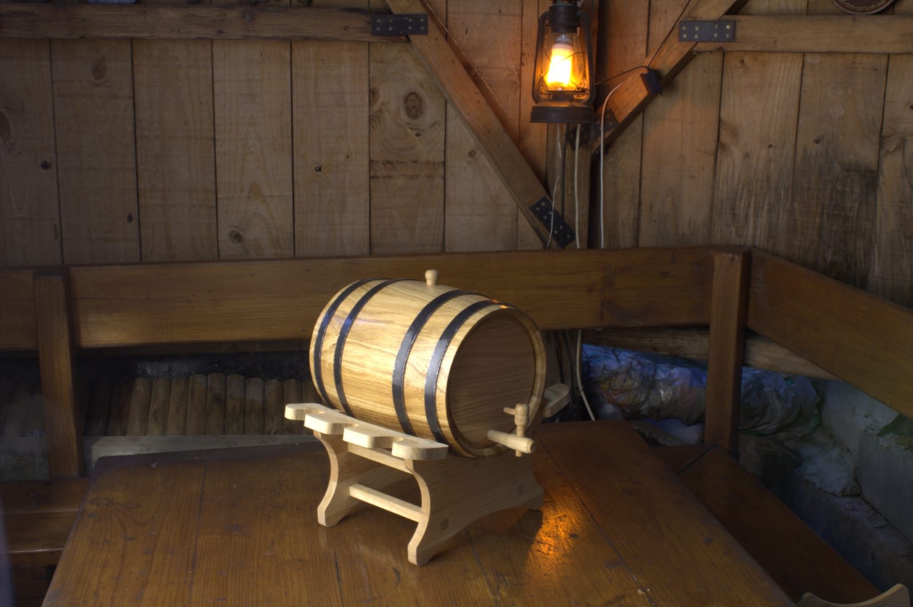
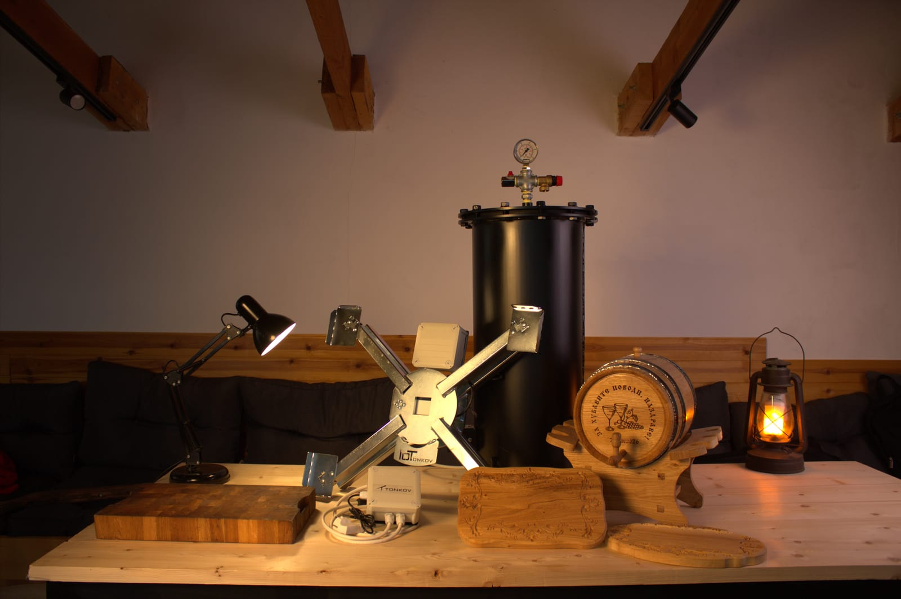
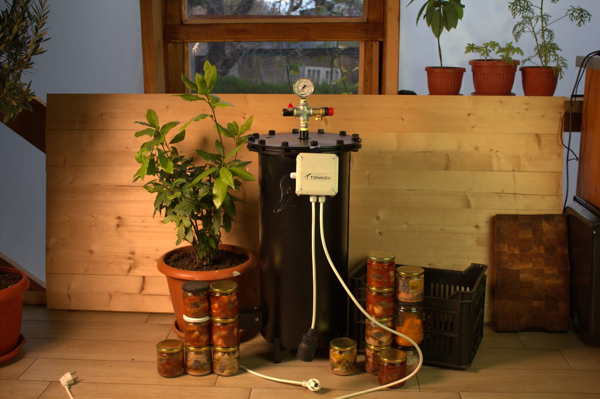
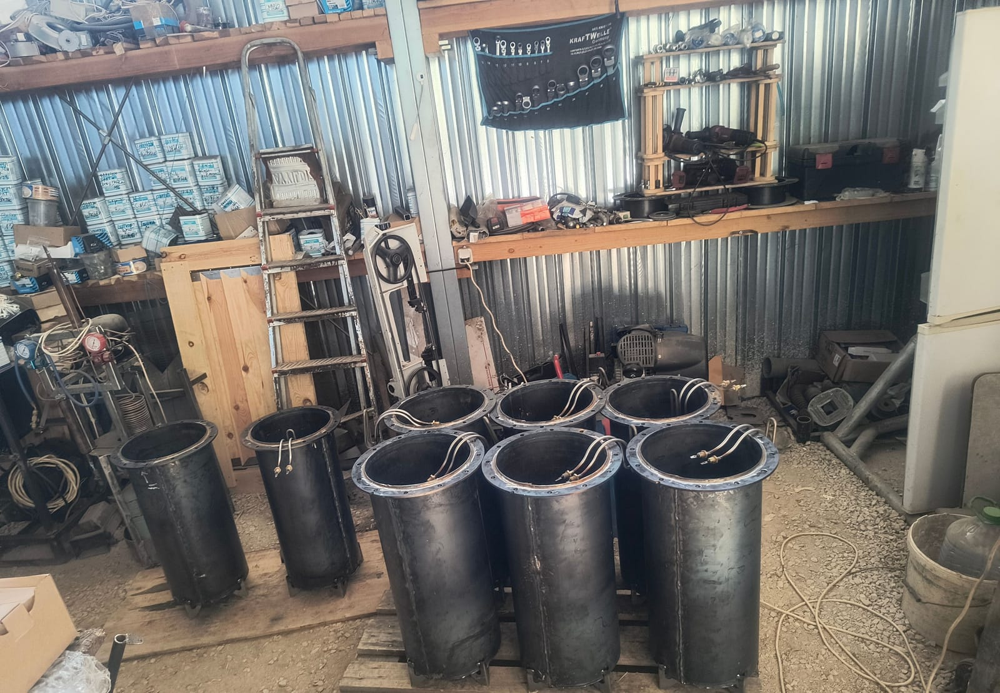

Дърво
Дървени изделия.
Изработени с отношение.
Дъбови бурета, плата за мезета, табели, икони и ловни мотиви. По каталог или по вашата идея.

Семейна работилница · Караисен · от 1992 г.
Автоклави за домашни консерви, уреди, които следят вместо вас, и изделия от дърво.
Ние сме семейна фирма от село Караисен с над 30 години опит в създаването на практични продукти. Влагаме знания, труд и лично отношение във всичко, което правим – от първата идея до последния детайл.
Какво правим

Дърво
Дъбови бурета, плата за мезета, табели, икони и ловни мотиви. По каталог или по вашата идея.

Автоклави
Електрически автоклав за 21 буркана на едно зареждане. Задавате температура и време на екрана — останалото върши контролерът.

Мониторинг и контрол
Интелигентни системи за мониторинг и автоматизация. Следете тегло, температура и условия в реално време. Получавайте данните директно на телефона си и реагирайте навреме.
Пелетни котли и горелки
Здрави, опростени и лесни за поддръжка — с компоненти, които се намират в България. Вземете готов агрегат или базова горелка, която да довършите сами.
Към котлите и горелкитеАвтоклави
От Караисен до Кърджали и от София до Варна. Всяка точка на картата е кухня, мазе или малка работилница, в която зимнината се прави с наш автоклав.
Разгледайте автоклава
Кои сме и как работим
Заваряваме, фрезоваме, запояваме и програмираме на едно място. Затова знаем какво има във всяко изделие — и можем да го поправим, променим или направим по ваша мярка.
Повече за нас
Корпусите на нашите автоклави и котли се изработват при нас. Всеки съд под налягане преминава през необходимите проверки и изпитвания, преди да напусне работилницата.

Работим на малки партиди, което ни дава свободата да контролираме качеството.

Използваме CNC машини за прецизна обработка, но не оставяме всичко на машините. Всяко изделие преминава през ръчно шлайфане, финишна обработка и внимателна проверка.
Без излишни оскъпявания, но технологично издържано.
Механизми и части, които се намират и сменят лесно.
Подкрепяме ви, ако искате сами да окомплектовате и пуснете продукта.
Добре дошли сте за демонстрация — след кратка уговорка.
Имате въпроси или конкретна идея? Елате да се запознаем. Ще поговорим, ще ви покажем какво правим и ще изпием по едно кафе.